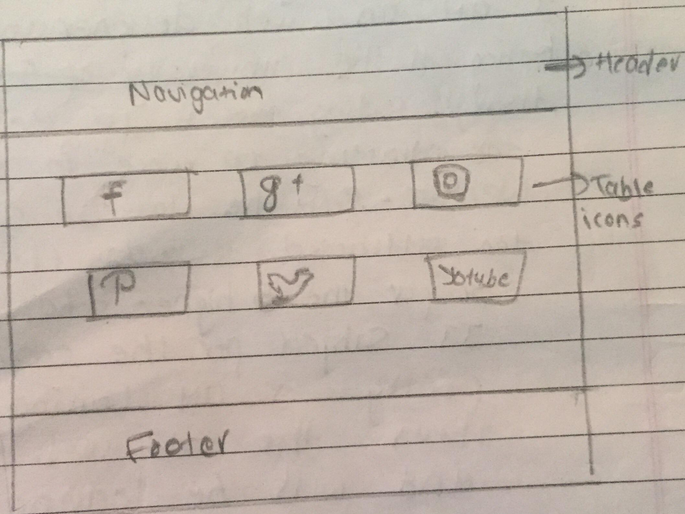
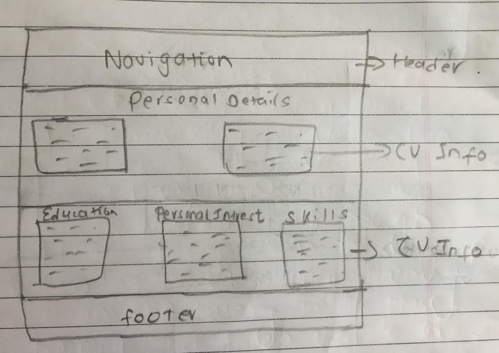
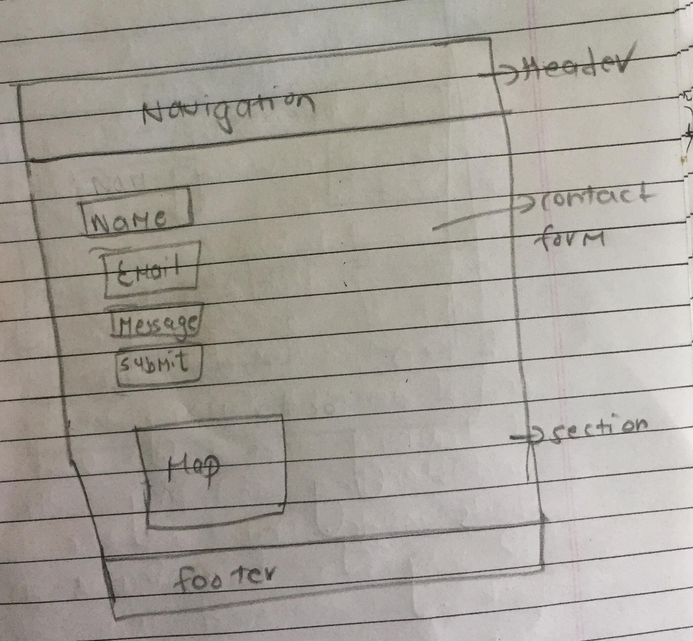
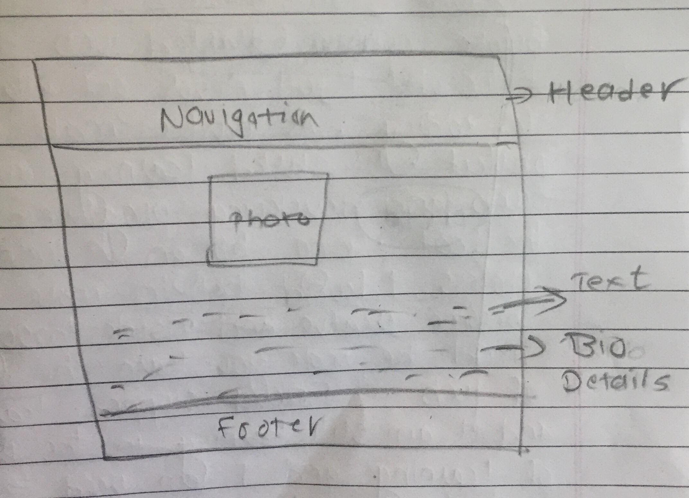
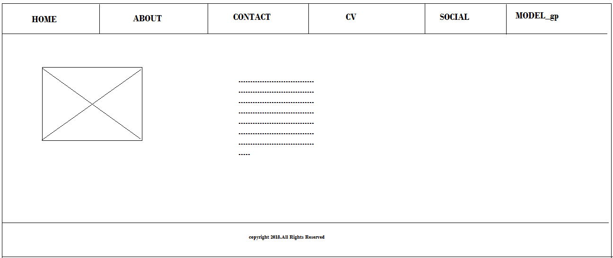
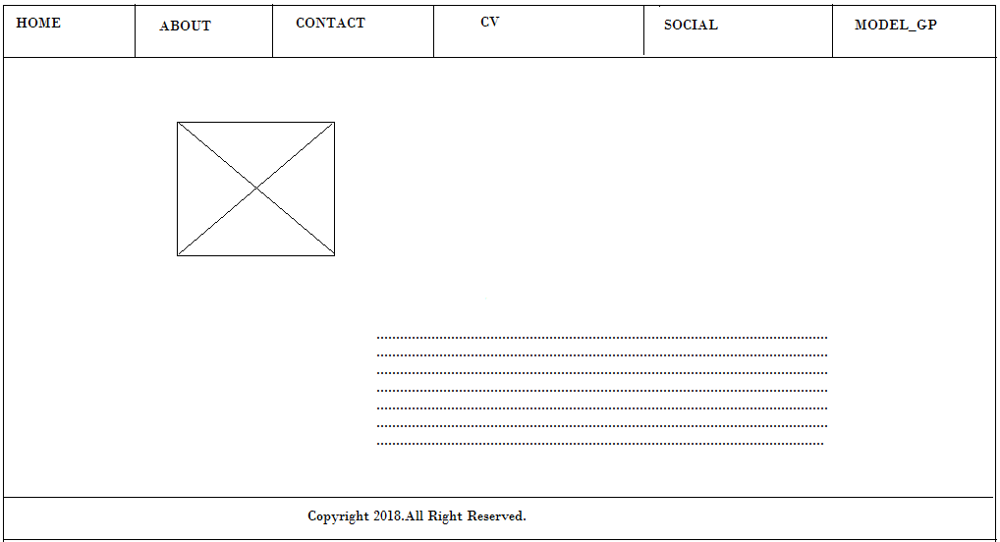
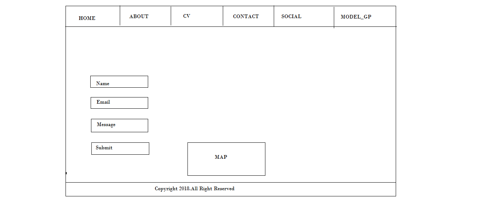
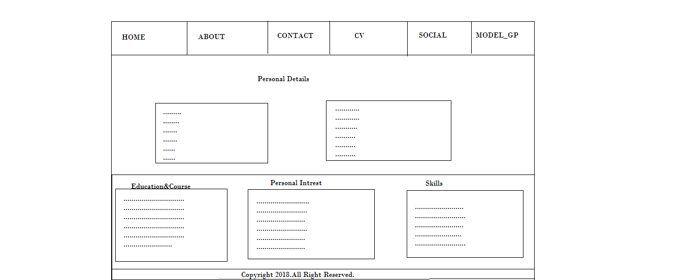
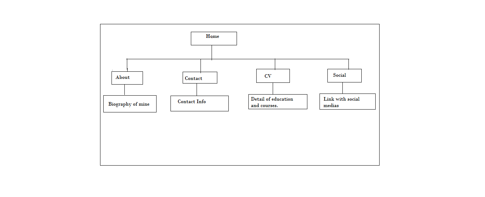

Social
CV
Contact
About
Wireframe
Homepage:
About:
Contact:
CV:
Social:

Prototypes
Image I have created
Navigation
As navigation in one of the most important part of the website.It helps user to get information of the site. Designing navigation is used for expressing the concept of different pages created in website.The navigation diagram which show details of navigation's information is listed below:
Progression of website over 12 weeks
Week 1-3
In week 1-5 mainly I reserched on the website pages.Then some how I got an idea to make website.Fist of all I mailny focused on the html and css.To make the design more perfect and better html and css should be known well.Then I looked for the design,theme,frame,colour,contect etc and got some of them and implement on my website.Basically,on these week I mainly focused on ideas to make the website better.Then from those idea I got started to make homepage for the website. Fist of all I got started with navigation bar.And I put some background color,change the margin,paddiing,display etc.After that I worked on section part where there is logo and some information about me.At last I started footer.And finally on the navigation bar I made it hover and made a responsive page.This week end here by finishing well develped index page.

Week 4-6
In this week I created about my biography.To create the biography the same navigation bar is used on it as the homepage.For the biography I created two division for the photo and the text then I started to write my biography.And for the proper page I managed it by giving css and frame to the photo.For more I include hover and transition.This week end here by making the biography of mine.

Week 7-9
For the contact page I include two div.In this page I had created four box for the contact form.First box is based on Name,Second is based on Email,Third is based on Message anf Fourth ia based on Submit.And on the downward it include the map of my hometown.For more I include the css for the contact form.

Week 10-11
For the CV page I created three div for Education and Courses,Personal Intrest and skills.In these thtree div I wrote all about my bioghraphy like about my school,college,intrest,skills. etc These three were created on each boxes.To make the box more attractive I use css by using different background color,using margin,padding etc.

Week 12
For the social page I had made two division for the different images.In this page I had linked scoial medias like faceebok.googleplus,instagram, youtube,pintrest and twitter.From these social media users get more intrest to know more about us and can find us easily.And after the social media, I started to write about the report.Though it was last week of this project, the overall report shoild be written on model_gp. On this week the report of overall is written and validation of html and css is checked.This week ends here by finishing my overall project with the website and report.

Validation for html:
for index page


for about page


for contact page


for cv page


for social page


Validation for css:

Conclusion:
From this project we came to learn a all about the website pages.For the better of my website I tried to create better website by learning html and css.I was very confused about the html and css,for me it was too hard to code the html and css.But from this project I got lot of concept of div class,section,footer,table icons,how to insert an image etc.Now for designing the website is not so hard as before it used to be.And hope more project on the future so that it would help me for the better develpment.This 12 weeks bring lot of changes in my learning and coding phase and we hoped for more project on upcoming days.